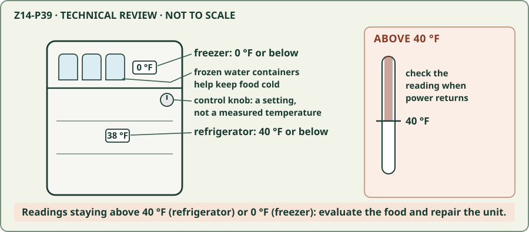

Z14-P39 · Food production and preservation · New manuscript
Track refrigerator and freezer safety continuously with appliance thermometers
Know true internal cold-storage temperatures immediately before and after power outages rather than relying on numbered dial settings.
When it applies · Every residential refrigerator, upright freezer, and chest freezer storing household food.
Equipment · Two inexpensive hanging/standing appliance thermometers (one in refrigerator center, one in freezer center).

Actions
- Keep a dedicated appliance thermometer permanently inside EVERY refrigerator (target 40°F / 4°C or below) AND every freezer (target 0°F / minus 18°C or below)—appliance control dials ("1 to 7") do NOT show actual temperature when seals wear or compressors fail.[F09, F10, P12]
- Check thermometers routinely each week and IMMEDIATELY when electrical power restores after an outage so your keep-or-discard decisions rest on real measured degrees rather than guesswork.[F10, F04, F05]
- Avoid overpacking refrigerator vents tightly (cold air needs circulation to keep door shelves ≤40°F), while keeping chest freezers packed reasonably full (or filling empty space with frozen water jugs) to increase thermal mass during outages.[F09, F05]
Failure recognition · Discovering after a storm that a warm-running refrigerator was already at 49°F before the power even went out.[P17, F04]
Verify · Confirm thermometers hang visibly inside every fridge (≤40°F) and freezer (≤0°F) and door gaskets seal cleanly.[F09, F10]
Stop or change course · Appliance readings climbing persistently above 40°F (fridge) or 0°F (freezer) trigger immediate food-safety evaluation and appliance repair.[F09, F04]
Evidence and editorial notes
- F04 · USDA / FDA / CDC · Food Safety During Power Outage (current web edition)
- Section: Refrigerated food and power outages · Conditions: Refrigerator starts cold; keep door closed
Support: An unopened refrigerator keeps food cold for about four hours. Follow the per-item discard chart after loss of temperature control. Never taste to test.
Limitations: Door openings accelerate warming; appliance thermometer is needed to verify temperature. · Conflicting evidence: None; retained for Z15 reconstruction.
Editorial note: Maintains five-pack integrity. · Specialist reviewer: Food safety and household preparedness
Primary source · checked 2026-11-24 - F05 · USDA / FDA / CDC · Food Safety During Power Outage (current web edition)
- Section: Frozen food and power outages · Conditions: Freezer door closed; typical household unit
Support: A full freezer holds temperature about 48 hours, a half-full freezer about 24. Use ice crystals or measured 40°F or below to evaluate refreezing where the chart permits.
Limitations: Varies by freezer insulation, ambient room temperature, and door seals. · Conflicting evidence: None; retained for Z15 reconstruction.
Editorial note: Maintains five-pack integrity. · Specialist reviewer: Food safety and household preparedness
Primary source · checked 2026-11-24 - F09 · FDA · Food and Water Safety During Power Outages and Floods (Content current as of 2024-03-05)
- Section: Be prepared for an emergency; during and after a power outage · Conditions: Household refrigerator and freezer before and during a power outage
Support: Keep appliance thermometers in the refrigerator and freezer, with the freezer at or below 0 degrees F and the refrigerator at or below 40 degrees F. An unopened refrigerator keeps food cold about 4 hours; a full freezer holds about 48 hours (24 if half full) with the door closed. Have coolers on hand if the power will be out more than 4 hours, freeze containers of water for ice, and buy dry or block ice for longer outages.
Limitations: Dry-ice handling and storing food outdoors are not covered. · Conflicting evidence: None; consistent with F04, F05 and F10.
Editorial note: Added in W2C-B06 because P17 cites a page that no longer carries the thermometer, ice and cooler statements (W2C-E038). · Specialist reviewer: Food safety and household preparedness
Primary source · checked 2026-11-28
Current assessment · W2C-E039-F09 (2026-11-28) · Bounded primary support recorded: Appliance thermometers; 0 F freezer and 40 F refrigerator targets; 4, 48 and 24-hour holding; coolers with ice kept at 40 F or below; frozen water containers; dry or block ice for long outages; never taste. Limits: Neither page covers dry-ice handling or outdoor storage. - F10 · CDC · Keep Food Safe After a Disaster or Emergency (2025-11-24)
- Section: Power outages: refrigerator, freezer and cooler food · Conditions: Food after a power outage or disaster
Support: Food stays safe up to 4 hours in a refrigerator, 48 hours in a full freezer and 24 hours in a half-full freezer without power. Put refrigerated perishables in a cooler with ice or frozen gel packs to keep them at 40 degrees F or below and check their temperature. Keep appliance thermometers in the refrigerator and freezer. Never taste food to tell whether it is safe.
Limitations: Does not address dry-ice handling or outdoor storage. · Conflicting evidence: None.
Editorial note: Added in W2C-B06. · Specialist reviewer: Food safety and emergency management
Primary source · checked 2026-11-28
Current assessment · W2C-E039-F10 (2026-11-28) · Bounded primary support recorded: Appliance thermometers; 0 F freezer and 40 F refrigerator targets; 4, 48 and 24-hour holding; coolers with ice kept at 40 F or below; frozen water containers; dry or block ice for long outages; never taste. Limits: Neither page covers dry-ice handling or outdoor storage.
Current assessment · W2C-E042 (2026-11-28) · Open: a statement on this card is not supported by this source: Sources support checking the thermometer after an outage; no cited source sets a weekly interval. The plate omits it. Limits: Card text retained pending a source. - P12 · NCHFP · Freezing Foods Safely (current web edition)
- Section: Freezing Foods > Blanching, Packaging, 0°F Storage, and Thawing · Conditions: Household freezers maintaining 0°F (-18°C) or lower
Support: Blanch most vegetables per tested times to inactivate quality-degrading enzymes, chill promptly, package in moisture-vapor-resistant freezer wrap/containers leaving liquid expansion headspace, freeze at 0°F or below, and thaw safely in the refrigerator (never on the counter).
Limitations: Freezing halts microbial growth but does not kill all pathogens; thawed foods require prompt safe cooking/handling. · Conflicting evidence: None; connects freezing quality control with Z15 outage loss decisions.
Editorial note: Core freezing and safe thawing evidence in Z14. · Specialist reviewer: Food safety and Extension preservation
Primary source · checked 2026-11-24 - P17 · USDA / FDA / CDC · Food Safety During Power Outage (current web edition)
- Section: Refrigeration Loss, Insulated Coolers, and Discard Boundaries · Conditions: Power outages or appliance failures affecting home food stocks
Support: Use appliance thermometers in both fridge (≤40°F) and freezer (≤0°F), group frozen foods tightly, avoid opening doors unnecessarily, use block/dry ice with ventilation precautions only when available, and discard perishable items held above 40°F over two hours.
Limitations: Dry ice sublimates into carbon dioxide gas and causes severe frostbite on bare skin; handle with gloves and ventilate spaces. · Conflicting evidence: None; integrates Z14 cold-chain protection with Z15-R03.
Editorial note: Links food preservation stocks to outage triage and safe discard gates. · Specialist reviewer: Food safety and emergency management
Primary source · checked 2026-11-24
Current assessment · A04-P17 (2026-11-25) · Open: support partial or missing (A04): Temperature/time conditions are product-specific. Source tables support several elements but dry-ice ventilation and universally discarding all perishables cannot be inferred. Limits: Specialist review PENDING (Food safety and emergency management); publication HOLD. All release decisions pending.
Current assessment · W2C-E038 (2026-11-28) · Partial: part of this claim is not on the cited page: The page carries the 4-hour refrigerator, 48 and 24-hour freezer and 40 F over 2 hours discard statements, but no appliance-thermometer, block-ice, dry-ice or ventilation statement. Limits: Z14-P39 and Z14-P40 now cite F09, F10 and P37 for those statements; other cards citing P17 keep the baseline text.
Source lineage · USDA/FDA/CDC FoodSafety.gov; new manuscript · Classification · New manuscript.